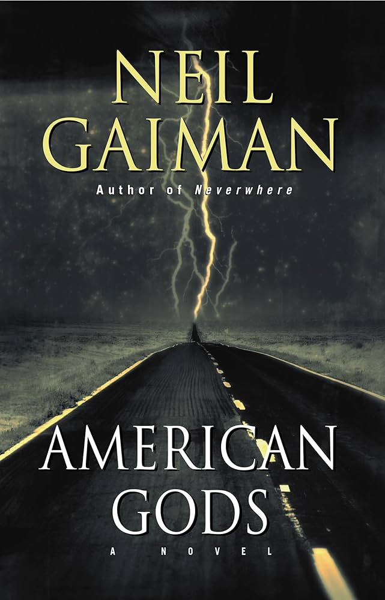
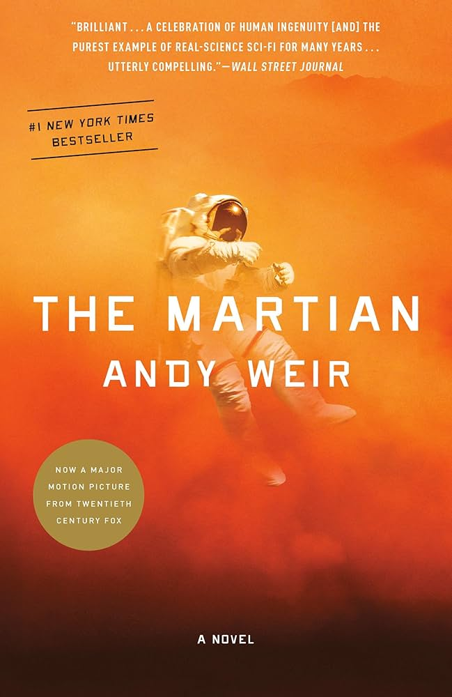

It has a tasy grilled cheese, but calling it a simple grilled cheese does not do it justice. It's long and filled with delicious spcies. That with a good cup of their Yemenite Coffee and maybe a pastry is a perfect start to the day!
| Name | Cover | Author | Synopsis |
|---|---|---|---|
| American Gods |  | Neil Gaiman | In this surreal book, belief creates gods that need followers to stay alive. The main character, Shadow, is a released convict who finds himself in the employ of an unknown god trying to rally other old gods against the new American gods of the modern era. It reads like a dream. |
| Fourth Wing |  | Andy Weir | A poor astronaut on earth's first Mars base is left behind after a cataclismic storm. With the rest of the crew heading towards earth, the astronaut needs to scavenge for supplies and try to survive on a planet humans hadn't evolved to survive on. Very entertaining read with some cool scientific applications/demonstrations throughout. |
| Eragon | Christopher Paolinin | A fun book about a boy that find a dragon egg that hatches. They need to escape the evil king and learn to become Dragon Riders. I beleive I read this 10+ times in middle school. | |
| Fourth Wing | |
Rebecca Yaros | A book about a recruit to the dragon school. In this book, Violet, must navigate the dangers of learning to fly while also avoiding backstabbing students. It's a fun read that I finished in less than a week this Summer! |